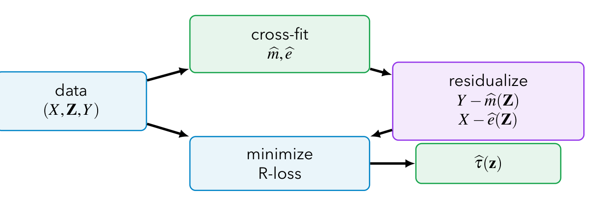
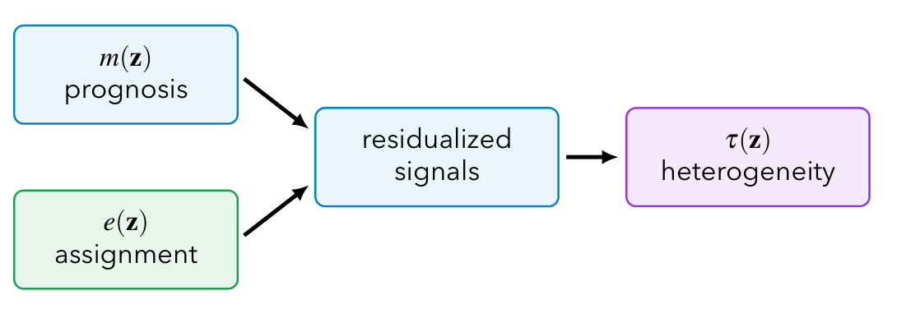

본 포스트는 서울대학교 GSDS Sanghack Lee 교수님의 Causal Inference 강의 자료(CATE: The R-Learner)를 바탕으로, 강의를 처음 듣는 독자도 논리적 흐름을 따라갈 수 있도록 재구성한 것입니다. 강의의 계보는 Robinson (1988)의 부분 선형 모형(partially linear model) 분해, Nie & Wager (2021, Biometrika; arXiv:1712.04912)의 준-오라클 추정(quasi-oracle estimation), 그리고 Chernozhukov et al. (2018)의 이중/편향제거 기계학습(double/debiased ML)에 닿아 있습니다. 앞선 15강 CATE: Heterogeneous Treatment Effects에서 다룬 S · T · X · DR-러너의 연장선에 놓인 회차입니다.
한 줄 요약 (TL;DR)
“CATE를 유사 결과(pseudo-outcome)로 만들어 회귀하는 대신, CATE 자체를 최소화 대상으로 삼는 손실 함수를 만들어 버린다.”
15강의 메타 러너들은 모두 먼저 무언가를 예측한 뒤 그 예측값을 빼는 구조였습니다. S · T · X-러너는 반응 함수 \(\mu_x\)의 오차를 그대로 \(\hat\tau\)로 흘려보내고, DR-러너는 이중 강건 점수로 그 흐름을 막되 개별 관측치 수준의 유사 결과를 만들어 회귀합니다. R-러너는 다른 길을 택합니다. 결과 \(Y\)와 처치 \(X\)를 각각 공변량 \(Z\)로 예측해 잔차만 남기면, 남은 잔차 사이에 \(\tilde{Y} = \tilde{X}\,\tau^*(Z) + \varepsilon\)이라는 관계가 정확히 성립합니다(로빈슨 분해). 그러면 CATE는 잔차를 잔차에 회귀시켰을 때의 기울기가 되고, 그 기울기를 찾는 제곱 손실 — R-손실 — 이 곧 추정 목적함수가 됩니다. 이 손실은 장애 함수(nuisance)의 오차에 대해 나이만 직교적이어서 그 오차가 2차로만 들어오고, 교차 적합과 결합하면 참 \(m^*, e^*\)를 알고 있는 오라클과 사실상 같은 초과 위험을 달성합니다(준-오라클 성질). 그 결과 수렴 속도를 지배하는 것은 \(m^*\)나 \(e^*\)의 복잡도가 아니라 \(\tau^*\) 자신의 복잡도입니다.
Part I. 동기 (Motivation)
1. 왜 또 하나의 CATE 러너인가 (Why Another CATE Learner?)
1.1 설정
관측 단위마다 독립 동일분포(i.i.d.)로 다음 삼중항을 관측한다고 합시다.
\[ O_i = (X_i, Z_i, Y_i), \qquad X_i \in \{0, 1\} \]
목표는 15강과 동일한 조건부 평균 처치효과(conditional average treatment effect, CATE)입니다.
\[ \tau(z) = E[Y_i(1) - Y_i(0) \mid Z_i = z] \]
- \(X_i\): 이진 처치, \(Z_i\): 공변량 벡터, \(Y_i\): 관측 결과
- 추정 대상은 여전히 스칼라가 아니라 \(z\)의 함수입니다.
1.2 기존 러너들의 계보와 그 한계
강의는 지금까지의 메타 러너를 세 갈래로 정리한 뒤, R-러너가 그 어느 쪽과도 다른 지점에서 출발한다고 말합니다.
| 계열 | 추정 전략 | 약점 |
|---|---|---|
| S · T · X-러너 | 반응 함수 \(\hat\mu_x\)를 적합해 그 차이를 CATE로 삼음 | 설명하기 쉽지만, 장애 회귀의 편향이 그대로 \(\hat\tau\)로 전이됨 |
| DR-러너 | 나이만 직교적인 DR 점수로 유사 결과를 만들고 그것을 \(Z\)에 회귀 | 유사 결과가 \(\hat e\)의 역수를 품고 있어 양의 확률성이 아슬아슬하면 폭발 |
| R-러너 | 목표가 \(\tau(\cdot)\) 자체인 손실 함수를 구성 | — (이번 회차의 주제) |
- S · T · X-러너의 문제를 다시 짚어 보겠습니다. \(\hat\tau^T(z) = \hat\mu_1(z) - \hat\mu_0(z)\)에서 \(\hat\mu_1\)이 어떤 이유로든 부실하게 적합되면, 그 오차는 뺄셈을 통해 아무런 저항 없이 CATE 추정치로 넘어옵니다. 15강 Figure C에서 T-러너 곡선이 참값 \(\tau = 1\) 주위에서 급락·급등했던 것이 정확히 이 현상이었습니다.
- DR-러너의 처방은 유사 결과 \(\hat\varphi^{DR}_i\)를 나이만 직교적인 점수로 만들어 그 전이를 차단하는 것이었습니다. 다만 여기서 추정의 형식은 여전히 “관측치마다 하나의 목표값을 만들고 그것을 회귀한다”입니다.
- R-러너의 발상은 한 걸음 더 나아갑니다. 관측치마다 목표값을 만드는 대신, 최소화하면 그 해가 곧 \(\tau^*\)가 되는 손실 함수를 직접 설계합니다. 그러면 두 번째 단계는 그냥 평범한 지도학습 문제 — 제곱 손실 최소화 — 가 되고, 우리가 아는 모든 기계학습 도구를 그대로 꽂아 쓸 수 있게 됩니다.
두 접근 모두 최종적으로는 \(\tau\)를 적합하지만, 무엇을 데이터로부터 만들어 내느냐가 다릅니다.
- DR-러너: 관측치 \(i\)마다 스칼라 목표값 \(\hat\varphi^{DR}_i\)를 만들고, \((Z_i, \hat\varphi^{DR}_i)\) 쌍으로 표준 회귀를 돌립니다. 즉 문제를 표준 회귀로 환원합니다.
- R-러너: 관측치마다 가중치 \((\hat X^r_i)^2\)와 국소 목표값 \(\hat Y^r_i / \hat X^r_i\)의 쌍을 만들고, 그것으로 가중 제곱 손실을 구성합니다. 즉 문제를 가중 회귀로 환원합니다.
이 차이가 왜 중요한지는 §9에서 드러납니다. 가중치 \((\hat X^r_i)^2\)가 “이 관측치가 \(\tau\)에 대해 얼마나 많은 정보를 갖고 있는가”를 자동으로 재는 눈금이 되기 때문입니다.
2. 식별 설정 (Identification Setup)
2.1 세 가지 표준 가정
R-러너 역시 관측 데이터로부터 인과효과를 뽑아내는 이상, 앞선 회차들과 동일한 세 가정 위에 서 있습니다.
- 일관성(consistency): \(Y_i = Y_i(X_i)\) — 관측된 결과는 실제로 받은 처치 하의 잠재적 결과와 같습니다.
- 비교란성(unconfoundedness): \(\{Y_i(0), Y_i(1)\} \perp\!\!\!\perp X_i \mid Z_i\) — 공변량으로 조건화하면 처치 배정이 잠재적 결과와 독립입니다.
- 중첩(overlap, positivity): \(0 < e^*(Z_i) < 1\) — 어떤 공변량 값에서도 두 처치가 모두 양의 확률로 관측됩니다.
이 셋은 새로운 것이 아니며, 13강(IPW · DR)과 15강(메타 러너)에서 쓴 가정과 정확히 같습니다. 달라지는 것은 이 가정 위에서 무엇을 정의하느냐입니다.
2.2 두 개의 장애 함수
R-러너가 사용하는 장애 함수(nuisance function)는 다음 둘입니다.
\[ e^*(z) = \Pr(X = 1 \mid Z = z), \qquad m^*(z) = E[Y \mid Z = z] \]
- \(e^*\)는 익숙한 성향 점수(propensity score)입니다.
- \(m^*\)는 결과의 주변 조건부 평균입니다. 여기가 미묘한 지점입니다.
강의가 슬라이드에서 명시적으로 경고하는 부분입니다.
\[ m^*(z) = E[Y \mid Z = z] \quad \neq \quad \mu_x(z) = E[Y(x) \mid Z = z] \]
- \(\mu_x\)는 처치 팔별(arm-specific) 평균입니다. T-러너 · X-러너 · DR-러너가 모두 이것을 추정했습니다.
- \(m^*\)는 처치로 나누지 않고 \(Z\)만으로 조건화한 평균입니다. 즉 관측된 처치 배정 비율대로 두 팔이 섞여 있는 값입니다.
- 그러므로 R-러너의 첫 단계는 “처치를 무시하고 결과를 예측하는” 순수한 예측 문제입니다. 팔별로 데이터를 쪼개지 않으므로 §1에서 지적한 T-러너의 표본 불균형 문제 자체가 발생하지 않습니다. 이 사소해 보이는 차이가 R-러너 설계의 첫 번째 실용적 이점입니다.
2.3 두 개의 잔차
이제 두 장애 함수로 결과와 처치를 각각 예측하고, 예측하지 못하고 남은 부분 — 잔차 — 을 정의합니다.
\[ \tilde{Y}_i = Y_i - m^*(Z_i), \qquad \tilde{X}_i = X_i - e^*(Z_i) \]
- \(\tilde{Y}_i\): \(Z\)로 설명되지 않는 결과의 잔여 변동
- \(\tilde{X}_i\): \(Z\)로 설명되지 않는 처치 배정의 잔여 변동
15강에서 \(\tilde{Y}_i\)는 DR 유사 결과를 가리켰습니다. 이번 회차에서 \(\tilde{Y}_i\)는 결과의 잔차 \(Y_i - m^*(Z_i)\)입니다. 강의 자료의 표기를 그대로 따르되, 이 충돌을 피하기 위해 본 포스트에서는 DR 유사 결과를 \(\hat\varphi^{DR}_i\)로 표기하겠습니다(§14에서 다시 등장합니다).
2.4 잔차화 표현
이 두 잔차 사이에 성립하는 관계가 R-러너의 출발점 전체입니다.
\[ \tilde{Y}_i = \tilde{X}_i\, \tau^*(Z_i) + \varepsilon_i, \qquad E[\varepsilon_i \mid Z_i, X_i] = 0 \]
이는 로빈슨(1988)의 부분 선형 분해에 계수를 변화시킨(varying coefficient) 형태입니다. 원래의 부분 선형 모형은 처치 계수를 상수 \(\tau\)로 두지만, 여기서는 그 자리에 함수 \(\tau^*(Z_i)\)가 들어앉아 있습니다. 이질적 처치효과를 다루겠다는 목표가 모형 구조에 그대로 반영된 셈입니다.
이 표현이 왜 성립하는지는 다음 절에서 유도합니다. 미리 말해 두면, 가정을 하나도 추가하지 않고 §2.1의 세 가정만으로 나오는 항등식입니다.
3. 잔차화 표현의 유도 (Deriving the Residualized Representation)
\(Z = z\)를 고정하고 다음 표기를 씁니다.
\[ \mu_x(z) = E[Y(x) \mid Z = z], \qquad \tau^*(z) = \mu_1(z) - \mu_0(z) \]
3.1 1단계 — 관측 회귀를 잠재적 결과로 옮겨 쓰기
일관성과 비교란성에 의해, 관측 데이터의 조건부 평균은 잠재적 결과의 조건부 평균과 같아집니다.
\[ E[Y \mid X = x, Z = z] = \mu_x(z) = \mu_0(z) + x\,\tau^*(z) \]
중간 단계를 풀어 보겠습니다.
- 일관성에 의해 \(X = x\)인 단위에서 \(Y = Y(x)\)이므로 \(E[Y \mid X = x, Z = z] = E[Y(x) \mid X = x, Z = z]\)입니다.
- 비교란성 \(\{Y(0), Y(1)\} \perp\!\!\!\perp X \mid Z\)에 의해 조건화 항목 \(X = x\)를 떼어낼 수 있습니다: \(E[Y(x) \mid X = x, Z = z] = E[Y(x) \mid Z = z] = \mu_x(z)\).
- 마지막으로 \(X\)가 이진이므로 \(\mu_x(z)\)는 \(x\)에 대해 정확히 선형으로 쓸 수 있습니다. \(x = 0\)이면 \(\mu_0(z)\), \(x = 1\)이면 \(\mu_0(z) + \tau^*(z) = \mu_1(z)\)이기 때문입니다. 이 선형성은 근사가 아니라 이진 변수의 항등식입니다.
3.2 2단계 — \(m^*\)를 두 팔의 혼합으로 분해하기
\(m^*\)는 관측된 처치 배정 비율대로 두 팔을 평균 낸 값이므로, 전확률 법칙에 의해
\[ \begin{aligned} m^*(z) &= E[Y \mid Z = z] \\ &= e^*(z)\,\mu_1(z) + \{1 - e^*(z)\}\,\mu_0(z) \\ &= \mu_0(z) + e^*(z)\,\tau^*(z) \end{aligned} \]
- 첫 줄에서 둘째 줄로: \(Z = z\)에서 처치를 받을 확률이 \(e^*(z)\)이고, 받은 단위의 평균 결과가 \(\mu_1(z)\), 받지 않은 단위의 평균 결과가 \(\mu_0(z)\)입니다.
- 둘째 줄에서 셋째 줄로: \(e^*\mu_1 + (1-e^*)\mu_0 = \mu_0 + e^*(\mu_1 - \mu_0) = \mu_0 + e^*\tau^*\)로 묶었습니다.
해석: \(m^*(z)\)는 기저 수준 \(\mu_0(z)\)에 처치를 받은 비율만큼의 효과가 얹힌 값입니다. 그래서 \(m^*\)에는 예후(prognosis) 정보와 처치효과 정보가 뒤섞여 있습니다.
3.3 3단계 — 두 식을 빼기
이제 §3.1의 식에서 §3.2의 식을 빼면 \(\mu_0(z)\)가 소거됩니다.
\[ \begin{aligned} E[Y - m^*(Z) \mid X, Z = z] &= \{\mu_0(z) + X\tau^*(z)\} - \{\mu_0(z) + e^*(z)\tau^*(z)\} \\ &= \{X - e^*(z)\}\,\tau^*(z) \end{aligned} \]
즉 잔차 표기로 쓰면
\[ E[\tilde{Y} \mid X, Z = z] = \tilde{X}\,\tau^*(z) \]
이고, 남은 차이를 \(\varepsilon\)으로 정의하면 §2.4의 잔차화 표현 \(\tilde{Y} = \tilde{X}\tau^*(Z) + \varepsilon\)을 얻습니다. \(\blacksquare\)
세 줄짜리 계산이지만 여기서 벌어진 일은 결코 사소하지 않습니다.
- \(\mu_0(z)\)는 결과의 절대 수준을 담고 있는 함수입니다. 수십 개 공변량에 복잡하게 의존할 수 있고, 실제로도 대개 그렇습니다.
- 그런데 두 식을 빼는 순간 \(\mu_0\)가 완전히 상쇄됩니다. 남는 것은 \(\tau^*\)뿐입니다.
- 상쇄된 자리를 \(m^*\)가 대신 채웠지만, \(m^*\)는 처치를 무시하고 \(Y\)를 예측하는 순수 예측 문제여서 어떤 기계학습 모형이든 마음껏 던져 넣을 수 있습니다.
“예후를 예측으로 흡수해 버리고 효과만 남긴다” — 이것이 로빈슨 분해가 인과추론에 주는 선물이고, R-러너의 이름이 R(esidual, Robinson)인 이유이기도 합니다.
4. 오라클 R-손실 (The Oracle R-Loss)
4.1 손실 함수의 정의
\(\tilde{Y}\)의 조건부 평균이 \(\tilde{X}\tau^*(Z)\)라는 사실을 알았으니, 참 장애 함수 \(m^*, e^*\)를 알고 있는 오라클(oracle)이라면 다음 제곱 손실을 최소화해 \(\tau\)를 추정하면 됩니다.
\[ L_R(\tau) = E\Big[\big\{\tilde{Y}_i - \tilde{X}_i\,\tau(Z_i)\big\}^2\Big] \]
이것이 R-손실(R-loss)입니다.
4.2 경험적 오라클 문제
모집단 기댓값을 표본 평균으로 바꾸고 정칙화 항을 붙이면, 실제로 풀 수 있는 최적화 문제가 됩니다.
\[ \tilde\tau = \arg\min_{\tau} \; \frac{1}{n}\sum_{i=1}^{n}\Big[\tilde{Y}_i - \tilde{X}_i\,\tau(Z_i)\Big]^2 \; + \; \underbrace{\Lambda_n\{\tau\}}_{\text{정칙화 항 (penalty / regularization)}} \]
- \(\Lambda_n\{\tau\}\)는 \(\tau\)의 복잡도에 대한 벌점입니다. \(\ell_1\)/\(\ell_2\) 노름, 나무의 깊이, 신경망의 가중치 감쇠 등 선택한 함수족 \(\mathcal{F}\)에 맞는 어떤 형태든 들어갈 수 있습니다.
- \(\tilde\tau\)에 물결표를 쓴 이유는 이것이 오라클 추정량이기 때문입니다. 실제로는 \(m^*, e^*\)를 모르므로 이 문제를 그대로 풀 수 없습니다. §7에서 이를 추정치로 대체한 실행 가능한(feasible) 버전 \(\hat\tau\)를 정의하고, §12에서 둘이 사실상 같다는 결과를 봅니다.
정칙화 항이 처음부터 명시적으로 등장한다는 점을 눈여겨볼 만합니다. 추정 대상이 함수이므로 어떤 함수족에서 찾을 것인가를 정하는 일이 추정 절차의 일부이며, R-러너는 그 결정을 손실 함수 바깥이 아니라 안쪽에 둡니다.
5. 잔차 회귀로서의 R-손실 (R-Loss as a Residual Regression)
§4의 손실이 왜 하필 CATE를 찾아 주는지를 보려면, 손실을 \(Z = z\)에서 국소적으로 들여다보는 것이 가장 빠릅니다.
5.1 국소 최소화 문제
\(Z = z\)로 조건화한 R-손실을, \(\tau(z)\)가 취할 수 있는 값 \(t\)에 대한 함수로 씁니다.
\[ Q_z(t) = E\Big[(\tilde{Y} - \tilde{X}t)^2 \;\Big|\; Z = z\Big] \]
- 이것은 원점을 지나는 최소제곱 회귀(through-the-origin least squares)의 목적함수입니다. 절편 항이 없는 이유는 두 변수가 이미 잔차 — 즉 조건부 평균이 0인 양 — 이기 때문입니다.
- \(\tilde{Y}\)를 종속변수, \(\tilde{X}\)를 설명변수로 놓고 기울기 하나만 찾는 문제입니다.
5.2 정규방정식과 모집단 기울기
\(Q_z(t)\)를 \(t\)에 대해 미분해 0으로 두면 정규방정식(normal equation)을 얻습니다.
\[ 0 = E\Big[\tilde{X}\big(\tilde{Y} - \tilde{X}\,t^\dagger_z\big) \;\Big|\; Z = z\Big] \]
유도: \(\frac{\partial}{\partial t}(\tilde{Y} - \tilde{X}t)^2 = -2\tilde{X}(\tilde{Y} - \tilde{X}t)\)이므로, 기댓값과 미분을 교환하고 \(-2\)를 나누면 위 식이 됩니다. \(Q_z\)는 \(t\)에 대한 볼록 이차식이므로 이 정상점이 유일한 최소점입니다.
이를 \(t^\dagger_z\)에 대해 풀면
\[ t^\dagger_z = \frac{E[\tilde{X}\tilde{Y} \mid Z = z]}{E[\tilde{X}^2 \mid Z = z]} \]
- 분자는 두 잔차의 조건부 공분산(둘 다 조건부 평균이 0이므로 공분산과 같습니다), 분모는 처치 잔차의 조건부 분산입니다.
- 강의가 말하는 “잔차 대 잔차의 기울기(residual-on-residual slope)”란 정확히 이 \(t^\dagger_z\)를 가리킵니다.
\(X\)가 이진이라는 사실을 쓰면 이 분모는 매우 친숙한 양이 됩니다.
\[ E[\tilde{X}^2 \mid Z = z] = \operatorname{Var}(X \mid Z = z) = e^*(z)\{1 - e^*(z)\} \]
- \(E[\tilde{X} \mid Z=z] = E[X \mid Z=z] - e^*(z) = 0\)이므로 2차 적률이 곧 분산입니다. 그리고 베르누이 확률변수의 분산은 \(p(1-p)\)입니다.
- 즉 분모는 중첩(overlap)이 얼마나 넉넉한가를 재는 값입니다. \(e^*(z)\)가 0이나 1에 가까워지면 분모가 0으로 붕괴하고, 그 지점에서 기울기 추정은 불안정해집니다.
- 중첩 가정이 R-러너에서 어디에 어떻게 나타나는지를 보여 주는 대목입니다. IPW처럼 \(1/\hat e\)로 폭발하는 형태가 아니라, 가중치가 0으로 사라지는 형태로 나타난다는 점이 §9에서 중요해집니다.
6. 왜 잔차 기울기가 CATE인가 (Why the Residual Slope is the CATE)
이제 \(t^\dagger_z = \tau^*(z)\)임을 두 줄로 보이면 Part I이 닫힙니다.
6.1 반복 기댓값 적용
§3.3에서 얻은 \(E[\tilde{Y} \mid X, Z = z] = \tilde{X}\,\tau^*(z)\)를 분자에 대입합니다. 반복 기댓값 법칙(law of iterated expectations)을 \(X\)에 대해 적용하면,
\[ \begin{aligned} E[\tilde{X}\tilde{Y} \mid Z = z] &= E\Big[\tilde{X}\, \underbrace{E[\tilde{Y} \mid X, Z = z]}_{=\,\tilde{X}\tau^*(z)} \;\Big|\; Z = z\Big] \\ &= E\big[\tilde{X}^2 \mid Z = z\big]\,\tau^*(z) \end{aligned} \]
- 안쪽 기댓값을 \(\tilde{X}\tau^*(z)\)로 바꾼 뒤, \(\tau^*(z)\)는 \(Z = z\)가 고정된 상태에서 상수이므로 기댓값 밖으로 나옵니다.
- \(\tilde{X}\)는 \((X, Z)\)의 함수이므로 안쪽 조건화 아래에서 그대로 곱해질 수 있습니다.
6.2 최소제곱 기울기에 대입
이 결과를 §5.2의 기울기 공식에 넣으면 분자와 분모가 같은 인자를 공유해 상쇄됩니다.
\[ t^\dagger_z = \frac{E[\tilde{X}^2 \mid Z = z]\,\tau^*(z)}{E[\tilde{X}^2 \mid Z = z]} = \tau^*(z) \]
CATE는 결과 잔차를 처치 잔차에 회귀시켰을 때의 모집단 기울기다.
\[ \tau^*(z) = \frac{E[\tilde{X}\tilde{Y} \mid Z = z]}{E[\tilde{X}^2 \mid Z = z]} = \arg\min_{t} \; E\big[(\tilde{Y} - \tilde{X}t)^2 \mid Z = z\big] \]
이 등식이 R-러너 전체의 정당화입니다. 오른쪽 끝은 최적화 문제이고 왼쪽 끝은 인과적 추정 대상입니다. 즉 인과추론 문제가 순수한 예측 문제 두 개(=\(m^*, e^*\)의 추정)와 가중 최소제곱 하나로 완전히 분해된 것입니다.
상쇄가 일어나려면 분모 \(E[\tilde{X}^2 \mid Z=z] > 0\)이어야 하는데, §5.2의 보조 설명에서 보았듯 이는 정확히 중첩 가정 \(0 < e^*(z) < 1\)입니다. 세 식별 가정이 유도의 어느 지점에서 각각 소비되는지 정리하면 다음과 같습니다.
| 가정 | 쓰인 곳 | 없으면 무너지는 것 |
|---|---|---|
| 일관성 | §3.1, \(E[Y \mid X=x, Z=z] = \mu_x(z)\) | 관측 회귀와 잠재적 결과의 연결 |
| 비교란성 | §3.1, 조건화 항목 \(X=x\)의 제거 | \(\mu_x\)가 인과적 의미를 잃음 |
| 중첩 | §6.2, 분모의 상쇄 | 기울기가 정의되지 않음 |
Part II. 알고리즘 (Algorithm)
7. R-러너 알고리즘 (R-Learner Algorithm)
오라클 문제를 실행 가능한 절차로 바꾸는 데 필요한 것은 두 가지입니다. 장애 함수의 추정과 교차 적합(cross-fitting)입니다.
1단계 — 폴드 분할. 데이터를 \(K\)개의 폴드로 나눕니다. 교차 적합이란 각 단위의 잔차를 계산할 때 그 단위가 들어 있지 않은 폴드들로 학습한 장애 모형을 사용한다는 뜻입니다.
2단계 — 장애 함수 적합. 각 폴드 \(k\)에 대해, 나머지 폴드들만으로 두 모형을 적합합니다. \[ \hat m^{(-k)}(z) \approx E[Y \mid Z = z], \qquad \hat e^{(-k)}(z) \approx \Pr(X = 1 \mid Z = z) \]
3단계 — 아웃오브폴드 잔차 구성. 단위 \(i\)가 속한 폴드를 \(k_i\)라 할 때, \[ \hat{Y}^r_i = Y_i - \hat m^{(-k_i)}(Z_i), \qquad \hat{X}^r_i = X_i - \hat e^{(-k_i)}(Z_i) \]
4단계 — R-손실 최소화. \[ \hat\tau = \arg\min_{\tau} \; \frac{1}{n}\sum_{i=1}^{n}\Big[\hat{Y}^r_i - \hat{X}^r_i\,\tau(Z_i)\Big]^2 + \Lambda_n\{\tau\} \]
- §4.2의 오라클 문제와 비교하면 달라진 것은 \(\tilde{Y}_i, \tilde{X}_i\)가 \(\hat{Y}^r_i, \hat{X}^r_i\)로 바뀐 것뿐입니다. 최적화 문제의 형태는 완전히 동일합니다.
- 이 “한 글자 차이”가 통계적으로 정당한 이유를 §11(직교성)과 §12(준-오라클 성질)에서 다룹니다.
8. 작업 흐름 그림 (Workflow Picture)

이 그림에서 읽어야 할 것은 정보의 흐름 방향입니다.
- 데이터는 두 경로로 소비됩니다. 한쪽은 장애 함수를 학습하는 데, 다른 한쪽은 최종 손실을 평가하는 데 쓰입니다.
- 교차 적합은 이 두 소비가 같은 관측치에 대해 동시에 일어나지 않도록 스케줄링하는 장치입니다. 왜 그것이 필요한지는 §13에서 자세히 봅니다.
9. R-손실은 잔차 처치 변동에 가중한다 (R-Loss Weights Residual Treatment Variation)
9.1 손실의 재작성
R-손실을 대수적으로 다시 쓰면 그 정체가 더 분명해집니다.
\[ \sum_i \Big[\hat{Y}^r_i - \hat{X}^r_i\,\tau(Z_i)\Big]^2 = \sum_i \big(\hat{X}^r_i\big)^2 \left[\frac{\hat{Y}^r_i}{\hat{X}^r_i} - \tau(Z_i)\right]^2 \]
- 좌변의 각 항에서 \((\hat{X}^r_i)^2\)을 인수로 뽑아낸 것뿐인 항등식입니다.
- 그러나 우변의 형태는 완전히 다른 이야기를 합니다. 이것은 목표값 \(\hat{Y}^r_i / \hat{X}^r_i\)에 대한 가중 제곱 손실이며, 가중치는 \((\hat{X}^r_i)^2\)입니다.
- 목표값 \(\hat{Y}^r_i / \hat{X}^r_i\)는 관측치 하나로 만든 가장 조악한 기울기 추정치입니다(§5.2의 비를 표본 하나로 근사한 것). R-러너는 이 잡음투성이 개별 추정치들을 정보량에 비례한 가중치로 매끄럽게 이어 붙이는 절차인 셈입니다.
9.2 가중치가 말하는 것
| \(\lvert \hat{X}^r_i \rvert\)가 클 때 | \(\lvert \hat{X}^r_i \rvert\)가 작을 때 | |
|---|---|---|
| 의미 | 처치가 \(Z_i\)로 잘 예측되지 않음 | 처치가 \(Z_i\)에 의해 거의 결정됨 |
| 성향 점수 | \(\hat e(Z_i)\)가 \(0.5\) 근처 | \(\hat e(Z_i)\)가 \(0\) 또는 \(1\) 근처 |
| 정보량 | 이 단위는 \(\tau(Z_i)\)에 대한 정보를 담고 있음 | 국소 \(\tau(Z_i)\)에 대해 말해 줄 것이 거의 없음 |
| 손실에서의 역할 | 큰 가중치 — \(\tau\)를 강하게 끌어당김 | 작은 가중치 — 압력이 거의 없음 |
R-러너는 잔차 처치 변동이 남아 있는 곳에서 CATE를 학습합니다.
처치가 공변량에 의해 사실상 결정되는 영역 — 즉 중첩이 위태로운 영역 — 에서는 애초에 반사실을 관측할 기회 자체가 없습니다. R-손실은 그런 영역의 관측치에 자동으로 작은 가중치를 부여해, 정보가 없는 곳에서 무리하게 효과를 추정하려 들지 않습니다.
이 지점에서 15강의 DR-러너와의 대비가 선명해집니다.
- DR-러너: 유사 결과가 \(\hat e(Z_i)\)와 \(1 - \hat e(Z_i)\)로 나누는 항을 품고 있어, 중첩이 나쁜 영역에서 \(\hat\varphi^{DR}_i\)가 폭발합니다. 소수의 극단적 관측치가 회귀 전체를 지배할 수 있습니다.
- R-러너: 중첩이 나쁜 영역에서 가중치 \((\hat{X}^r_i)^2 \approx \hat e(1-\hat e)\)가 0으로 수렴합니다. 문제가 폭발이 아니라 침묵의 형태로 나타납니다.
두 방식 모두 중첩이 나쁜 영역에서 \(\tau\)를 잘 추정하지 못한다는 사실 자체는 같습니다. 다만 R-러너는 그 무능을 추정치 폭발이 아니라 가중치 소멸로 표현하므로, 분산 측면에서 훨씬 온순하게 실패합니다. 물론 이는 그 영역의 \(\tau\) 추정이 다른 영역으로부터 외삽된 값이라는 뜻이기도 하므로, 온순함이 곧 정확함은 아닙니다.
10. 무엇이 R-손실을 최적화할 수 있는가 (What Can Optimize the R-Loss?)
10.1 2단계는 그냥 경험적 위험 최소화입니다
\[ \min_{\tau \in \mathcal{F}} \; \frac{1}{n}\sum_i \Big[\hat{Y}^r_i - \hat{X}^r_i\,\tau(Z_i)\Big]^2 + \Lambda_n\{\tau\} \]
이 문제에는 인과추론에 특유한 구조가 남아 있지 않습니다. 제곱 손실을 다룰 수 있는 학습기라면 무엇이든 함수족 \(\mathcal{F}\)의 자리에 들어갈 수 있습니다.
| 단순한 선택 (Simple choices) | 유연한 선택 (Flexible choices) |
|---|---|
| 선형 또는 희소 선형 \(\tau(z)\) | 랜덤 포레스트 |
| 스플라인, 커널 | 신경망 |
| 부스팅 | 제곱 손실 API를 가진 임의의 학습기 |
- 좌열은 \(\tau\)에 구조를 부과하고 싶을 때의 선택입니다. 효과 신호가 약할 때 특히 유용합니다(§15).
- 우열은 \(\tau\)의 모양에 대해 아는 바가 없을 때의 선택입니다.
- 실무적으로는 가중치 \((\hat X^r_i)^2\)를 표본 가중치(sample weight)로, 목표값 \(\hat Y^r_i / \hat X^r_i\)를 레이블로 넘기면 가중 제곱 손실을 지원하는 표준 라이브러리에 그대로 태울 수 있습니다(§9.1의 항등식).
10.2 모형 선택의 기준이 바뀝니다
가장 흔한 실수가 여기 있습니다. 2단계 학습기의 하이퍼파라미터를 고를 때, 결과 \(Y\)를 얼마나 잘 예측하는가는 기준이 될 수 없습니다.
- CATE는 관측되지 않으므로, \(\tau\)에 대한 직접적인 검증 오차를 계산할 방법이 없습니다. 이것이 CATE 추정 전반의 근본적 난점입니다.
- R-러너는 이 난점에 대해 검증 R-손실(validation R-loss)이라는 답을 갖고 있습니다. 홀드아웃 집합 \(V\)에서 \[ \sum_{i \in V} \Big[\hat{Y}^r_i - \hat{X}^r_i\,\hat\tau_\lambda(Z_i)\Big]^2 \] 를 계산해 후보 모형 \(\hat\tau_\lambda\)들을 비교하면 됩니다.
- 이것이 가능한 이유는 §6에서 본 대로 \(\tau^*\)가 R-손실의 최소점이기 때문입니다. 즉 R-손실은 추정의 목적함수인 동시에 모형 선택의 척도로 재사용됩니다. 이 이중 용도가 R-러너의 실용적 매력 중 하나입니다.
Part III. 직교성 (Orthogonality)
11. 나이만 직교성 (Neyman Orthogonality)
§7에서 참 잔차를 추정 잔차로 바꿔치기했습니다. 그것이 왜 용인되는지를 설명하는 것이 이 절입니다.
11.1 모멘트 함수
모집단 모멘트란 목표 모집단에서 값이 0이 되는 기댓값 방정식을 말합니다 — 유한 표본의 요동이 개입하기 이전의 개념입니다. 후보 \(\tau\)에 대해 R-러너가 사용하는 모멘트 함수는 다음과 같습니다.
\[ \psi(O; \tau, m, e) = \Big(Y - m(Z) - \big(X - e(Z)\big)\tau(Z)\Big)\big(X - e(Z)\big) \]
참값에서 조건부 모집단 모멘트는 0이 됩니다.
\[ E\big[\psi(O; \tau^*, m^*, e^*) \mid Z = z\big] = 0 \]
- 이 \(\psi\)는 새로운 것이 아닙니다. §5.2의 정규방정식 좌변과 정확히 같습니다. 즉 “R-손실을 최소화한다”와 “이 모멘트를 0으로 만든다”는 같은 말입니다.
- 참값에서 0이 된다는 사실은 §6.1에서 이미 확인했습니다: \(E[\tilde{X}\tilde{Y} \mid Z=z] - E[\tilde{X}^2 \mid Z=z]\tau^*(z) = 0\).
11.2 장애 함수를 흔들어 보기
이제 핵심 질문을 던집니다. 장애 함수를 조금 틀리게 넣으면 모멘트는 얼마나 틀어지는가?
\(\tau = \tau^*\)로 고정한 채, 장애 함수에 오차를 넣습니다.
\[ m = m^* + \delta_m, \qquad e = e^* + \delta_e \]
\(Z = z\)로 조건화했을 때,
\[ E\big[\psi(O; \tau^*, m, e) \mid Z = z\big] = \underbrace{\delta_m(z)\,\delta_e(z)}_{\text{곱}} \;-\; \underbrace{\tau^*(z)\,\delta_e(z)^2}_{\text{제곱}} \]
\(\delta_m\)이나 \(\delta_e\)의 1차 항이 하나도 남지 않습니다. 작은 장애 오차는 모멘트에 2차(second-order) 편향만을 만들어 내며, 그래서 유연한 기계학습 모형으로 장애 함수를 적합해도 무방합니다. (Nie & Wager, 2021; Chernozhukov et al., 2018)
11.3 단계별 유도
이 결과가 어떻게 나오는지 직접 확인해 보겠습니다. 슬라이드는 결과만 제시하지만, 계산 자체는 두 항의 전개로 끝납니다.
1단계 — 잔차 표기로 정리. 정의에 따라
\[ Y - m(Z) = \tilde{Y} - \delta_m(z), \qquad X - e(Z) = \tilde{X} - \delta_e(z) \]
이므로, \(\tau = \tau^*\)를 넣은 모멘트 함수는
\[ \psi = \Big(\tilde{Y} - \delta_m - \tau^*\big(\tilde{X} - \delta_e\big)\Big)\big(\tilde{X} - \delta_e\big) \]
가 됩니다. 이하 \(Z = z\)가 고정되어 있으므로 \(\delta_m, \delta_e, \tau^*\)는 모두 상수로 취급합니다.
2단계 — 필요한 조건부 적률 정리. 유도에 쓰일 세 가지 사실을 미리 모아 둡니다.
\[ E[\tilde{X} \mid Z=z] = 0, \qquad E[\tilde{Y} \mid Z=z] = 0, \qquad E[\tilde{X}\tilde{Y} \mid Z=z] = E[\tilde{X}^2 \mid Z=z]\,\tau^*(z) \]
앞의 둘은 잔차의 정의에서 곧바로 나오고(\(E[X \mid Z=z] = e^*(z)\), \(E[Y \mid Z=z] = m^*(z)\)), 셋째는 §6.1에서 유도한 식입니다. 편의상 \(v(z) = E[\tilde{X}^2 \mid Z = z]\)로 두겠습니다.
3단계 — 전개. 두 괄호를 곱해 항별로 나열합니다.
\[ \psi = \tilde{X}\tilde{Y} - \delta_e\tilde{Y} - \delta_m\tilde{X} + \delta_m\delta_e - \tau^*\tilde{X}^2 + \tau^*\delta_e\tilde{X} + \tau^*\delta_e\tilde{X} - \tau^*\delta_e^2 \]
4단계 — 조건부 기댓값. 2단계의 적률을 항마다 대입합니다.
| 항 | \(E[\cdot \mid Z=z]\) | 근거 |
|---|---|---|
| \(\tilde{X}\tilde{Y}\) | \(v(z)\,\tau^*(z)\) | §6.1 |
| \(-\delta_e\tilde{Y}\) | \(0\) | \(E[\tilde{Y} \mid Z=z]=0\) |
| \(-\delta_m\tilde{X}\) | \(0\) | \(E[\tilde{X} \mid Z=z]=0\) |
| \(+\delta_m\delta_e\) | \(\delta_m(z)\delta_e(z)\) | 상수 |
| \(-\tau^*\tilde{X}^2\) | \(-\tau^*(z)\,v(z)\) | \(v\)의 정의 |
| \(+2\tau^*\delta_e\tilde{X}\) | \(0\) | \(E[\tilde{X} \mid Z=z]=0\) |
| \(-\tau^*\delta_e^2\) | \(-\tau^*(z)\delta_e(z)^2\) | 상수 |
5단계 — 합산. 첫 항과 다섯째 항이 \(v(z)\tau^*(z) - \tau^*(z)v(z) = 0\)으로 상쇄되므로,
\[ E\big[\psi(O; \tau^*, m, e) \mid Z = z\big] = \delta_m(z)\delta_e(z) - \tau^*(z)\delta_e(z)^2 \]
를 얻습니다. \(\blacksquare\)
11.4 이 결과를 어떻게 읽어야 하는가
- 1차 항이 사라진 방식이 두 갈래라는 점이 흥미롭습니다. \(\delta_m\)의 1차 항 \(-\delta_m\tilde{X}\)는 \(\tilde{X}\)의 조건부 평균이 0이라서 사라지고, \(\delta_e\)의 1차 항 \(-\delta_e\tilde{Y}\)는 \(\tilde{Y}\)의 조건부 평균이 0이라서 사라집니다. 즉 한 장애 함수의 오차를 다른 장애 함수의 잔차가 상쇄해 주는 구조입니다. 두 개를 동시에 잔차화한 것이 우연이 아니었던 셈입니다.
- 남은 두 항의 성격이 다릅니다. \(\delta_m\delta_e\)는 두 오차의 곱이므로 부호가 어느 쪽이든 될 수 있고, 두 추정이 서로 독립적으로 틀린다면 상당 부분 상쇄됩니다. 반면 \(-\tau^*\delta_e^2\)는 제곱이므로 항상 같은 부호이며, \(\delta_e\)의 오차만은 체계적으로 축적됩니다. 성향 점수 추정이 결과 회귀 추정보다 조금 더 조심스럽게 다루어져야 하는 이유가 여기 있습니다.
- 15강 DR-러너의 잔차 항이 \(\big(e_{\text{true}} - e\big)\big(\mu_{\text{true}} - \mu\big)\) 형태의 곱으로 인수분해되었던 것과 같은 계열의 성질입니다. 이름도 같습니다 — 나이만 직교성.
12. 준-오라클 성질 (The Quasi-Oracle Property)
직교성은 “모멘트가 2차로만 틀어진다”는 국소적 진술입니다. 그것이 추정량의 성능으로 어떻게 번역되는지가 이 절의 내용입니다.
12.1 오라클 R-위험과 초과 위험
성능의 척도로는 참 장애 함수로 정의된 모집단 R-위험을 씁니다.
\[ R^*(\tau) = E\Big[\big\{Y - m^*(Z) - (X - e^*(Z))\tau(Z)\big\}^2\Big], \qquad \text{초과 위험} = R^*(\tau) - R^*(\tau^*) \]
- \(R^*\)는 참 \(m^*, e^*\)로 정의된 위험입니다. 추정치 \(\hat m, \hat e\)가 아니라는 점이 중요합니다 — 평가의 눈금 자체는 추정 오차에 오염되지 않아야 하기 때문입니다.
- 초과 위험(excess risk)은 후보 \(\tau\)가 최적 \(\tau^*\)에 비해 얼마나 손해인지를 재는 양이며, \(\tau^*\)에서 0이 되고 그 밖에서는 양수입니다.
12.2 준-오라클 결과
두 추정량을 비교합니다.
- \(\hat\tau\): 실행 가능한(feasible) 추정량 — \(\hat m, \hat e\)로 만든 잔차를 적합합니다.
- \(\tilde\tau\): 오라클 추정량 — 참값 \(m^*, e^*\)를 알고 있다고 가정하고 적합합니다(§4.2).
장애 함수가 충분히 잘 추정되기만 하면,
\[ R^*(\hat\tau) - R^*(\tau^*) \;\approx\; R^*(\tilde\tau) - R^*(\tau^*) \]
실행 가능한 추정량의 초과 위험이 오라클의 초과 위험과 사실상 같습니다. \(m^*, e^*\)를 몰랐다는 사실에 대해 우리는 (1차 수준에서) 아무런 대가도 치르지 않는 셈입니다.
12.3 세 가지 따름 결과
강의는 이 정리에서 세 가지를 읽어 냅니다.
- ① 수렴 속도는 주로 \(\tau^*\)의 복잡도에 의존합니다. \(m^*\)나 \(e^*\)가 아무리 복잡하더라도, 그 복잡도가 \(\hat\tau\)의 수렴 속도를 결정하지 않습니다.
- ② 잔차화 이후의 2단계는 주로 \(\tau^*\)만을 학습합니다. 예후와 처치 배정의 복잡성은 1단계에서 이미 흡수되어 버렸기 때문입니다(§3.3의 상쇄).
- ③ 다만 대가가 완전히 0은 아닙니다. \(\hat\tau\)가 오라클처럼 행동하려면 장애 함수의 RMSE가 \(o(n^{-1/4})\)이어야 합니다.
§11의 유도가 이 조건의 출처를 그대로 설명해 줍니다.
- 장애 오차가 모멘트에 미치는 영향은 \(\delta_m\delta_e\)와 \(\delta_e^2\) — 즉 오차의 2차 항이었습니다.
- 두 오차가 모두 \(o(n^{-1/4})\) 속도로 줄어든다면, 그 곱과 제곱은 \(o(n^{-1/2})\) 속도로 줄어듭니다.
- \(n^{-1/2}\)는 통계적 추정에서 잡음이 사라지는 표준 속도입니다. 즉 장애 추정에서 오는 편향이 표본 요동에 묻혀 보이지 않게 되는 문턱이 정확히 \(n^{-1/4}\)입니다.
- \(n^{-1/4}\)는 비모수 회귀 문헌에서 상당히 관대한 요구입니다. 랜덤 포레스트나 라쏘 같은 표준 도구들이 온건한 조건에서 만족시킬 수 있는 수준이며, 이것이 “유연한 기계학습을 장애 추정에 써도 된다”는 주장의 정량적 근거입니다.
15강 DR-러너에서 \(n^{-1/4}\)가 등장했던 것과 완전히 같은 논리 구조입니다.
13. 왜 교차 적합이 중요한가 (Why Cross-Fitting Matters)
직교성은 장애 함수의 오차를 다루는 장치입니다. 그런데 그것만으로 해결되지 않는 문제가 하나 더 있습니다.
13.1 문제의 발생
관측치 \(i\)가 \(\hat m, \hat e\)를 학습하는 데에도 쓰였다고 합시다.
- 그러면 \(\hat m(Z_i)\)와 \(\hat e(Z_i)\)는 \((Y_i, X_i)\)에 들어 있던 잡음까지 부분적으로 외워 버릴 수 있습니다.
- 그 결과 잔차 \(Y_i - \hat m(Z_i)\)는 실제보다 작아집니다. 예측이 잡음까지 맞혔으니 남는 것이 줄어드는 것은 당연합니다.
- 2단계는 이렇게 만들어진 표본 내(in-sample) 잔차를 적합하게 되고, 1단계의 과적합 흔적을 \(\tau(Z)\)의 이질성으로 오인할 수 있습니다.
13.2 두 상황의 대비
| 교차 적합이 없을 때 | 교차 적합이 있을 때 | |
|---|---|---|
| 잔차의 성격 | 표본 내 잔차 — 지나치게 작아질 수 있음 | 아웃오브폴드 예측에 기반한 잔차 |
| 잡음의 흐름 | \(\hat m, \hat e\)가 적합해 버린 잡음이 R-손실로 새어 들어옴 | 단위 \(i\)의 잡음은 그 단위의 장애 모형 학습에 쓰이지 않음 |
| 결과 | \(\tau\) 적합에 과적합 편향이 생김 | 직교성이 1차 장애 편향을 제거할 수 있는 상태가 됨 |
강의가 이 절의 결론으로 못 박는 문장입니다.
- 직교성은 장애 오차(nuisance error)를 다룹니다 — “\(\hat m\)이 \(m^*\)와 다르다”는 사실이 \(\hat\tau\)에 2차로만 들어오게 합니다.
- 교차 적합은 같은 잡음의 재사용(reusing the same noise twice)을 막습니다 — 관측치 \(i\)의 잡음이 잔차 계산과 손실 평가에 두 번 쓰이는 것을 차단합니다.
둘 중 하나만으로는 부족합니다. 직교성이 있어도 표본 내 잔차를 쓰면 과적합 편향이 남고, 교차 적합을 해도 직교적이지 않은 손실을 쓰면 장애 오차가 1차로 흘러 들어옵니다. R-러너는 두 장치를 모두 갖춘 절차입니다.
Part IV. 비교 (Comparison)
14. R-러너 vs DR-러너 (R-Learner vs DR-Learner)
두 방법 모두 나이만 직교성에 기반한 CATE 추정량이지만, 직교성을 확보하는 경로와 2단계에서 푸는 문제가 다릅니다.
| DR-러너 | R-러너 | |
|---|---|---|
| 다루는 대상 | 유사 결과 \(\hat\varphi^{DR}\) | \(\tau(Z)\)에 대한 손실 함수 |
| 2단계 | \(\hat\varphi^{DR}_i\)를 \(Z_i\)에 회귀 | 잔차화된 가중 손실을 최소화 |
| 직교성의 출처 | 효율적 영향 함수(EIF) / DR 점수 | 로빈슨 잔차화 |
| 모형 선택 | \(\hat\varphi^{DR}\)에 대한 검증 MSE | 검증 R-손실 |
| 주된 장애 함수 | \(\mu_0, \mu_1, e\) | \(m, e\) |
14.1 DR 유사 결과
비교의 대상이 되는 DR 유사 결과를 다시 적어 둡니다(15강과 동일한 식입니다).
\[ \hat\varphi^{DR}_i = \hat\mu_1(Z_i) - \hat\mu_0(Z_i) + \frac{X_i\{Y_i - \hat\mu_1(Z_i)\}}{\hat e(Z_i)} - \frac{(1 - X_i)\{Y_i - \hat\mu_0(Z_i)\}}{1 - \hat e(Z_i)} \]
14.2 두 검증 손실
모형 선택 단계에서 두 방법이 사용하는 척도도 서로 다릅니다. 홀드아웃 집합 \(V\)와 후보 추정량 \(\hat\tau_\lambda\)에 대해,
\[ \text{DR:} \quad \sum_{i \in V}\big\{\hat\varphi^{DR}_i - \hat\tau_\lambda(Z_i)\big\}^2, \qquad \text{R:} \quad \sum_{i \in V}\big\{\hat{Y}^r_i - \hat{X}^r_i\,\hat\tau_\lambda(Z_i)\big\}^2 \]
14.3 차이가 실무에서 갖는 의미
- 장애 함수의 개수가 다릅니다. DR-러너는 \(\mu_0, \mu_1, e\) 세 개를 추정해야 하고, 그중 \(\mu_0, \mu_1\)은 각 팔의 데이터만으로 적합됩니다. R-러너는 \(m, e\) 두 개면 되고, 둘 다 전체 데이터로 적합됩니다. 처치군이 희소할 때 이 차이가 실질적으로 작동합니다(§2.2).
- 중첩이 나쁠 때의 실패 양상이 다릅니다. DR은 \(1/\hat e\)를 통해 폭발하고, R은 가중치가 소멸합니다(§9.2).
- 검증 손실의 성격이 다릅니다. DR의 검증 MSE는 \(\hat\varphi^{DR}\)이라는 잡음 큰 목표값에 대한 오차이므로 분산이 큽니다. R의 검증 손실은 가중 형태여서 정보가 적은 관측치의 기여가 자동으로 억제됩니다.
- 다만 어느 쪽이 항상 낫다고는 말할 수 없습니다. 두 방법은 서로 다른 장애 함수의 품질에 의존하므로, \(\mu_x\)가 잘 추정되는 문제와 \(m\)이 잘 추정되는 문제에서 우열이 갈립니다.
15. R-러너는 무엇을 위한 것인가 (What the R-Learner Is For)
강의가 정리하는 세 가지 용도입니다.
- ① 잔차화된 CATE 추정 (Residualized CATE estimation) — 예후(prognosis)와 처치 배정(assignment)을 제거한 뒤 \(\tau(Z)\)를 추정합니다. 이것이 기본 용도입니다.
- ② 모형 선택 (Model selection) — 검증 R-손실을 사용해 후보 \(\tau\) 모형들을 조율하고 비교합니다(§10.2). 관측되지 않는 CATE에 대해 비교 가능한 척도를 제공한다는 점에서 독립적인 가치가 있습니다.
- ③ 정칙화된 이질성 (Regularized heterogeneity) — 효과 신호가 약할 때 \(\tau\)에 직접 수축(shrinkage)이나 구조를 부과합니다. R-손실은 \(\tau\)를 명시적인 최적화 변수로 갖고 있으므로, 벌점을 정확히 원하는 대상에 걸 수 있습니다.

16. 요약 (Summary)
강의가 마지막 슬라이드에서 정리하는 네 문장입니다.
- R-러닝은 로빈슨 분해에서 출발합니다. \[ Y - m(Z) = \{X - e(Z)\}\,\tau(Z) + \varepsilon \]
- \(m\)과 \(e\)를 교차 적합으로 추정한 뒤, 잔차화된 R-손실을 최소화합니다.
- R-손실은 장애 오차에 대해 직교적이며, 다양한 기계학습 도구로 최적화할 수 있습니다.
- 준-오라클 결과는 어려움의 본질이 \(m\)과 \(e\)의 복잡도가 아니라 주로 \(\tau\)의 복잡도에 있음을 말해 줍니다.
정리하며 (Closing Remarks)
이번 회차는 “CATE를 어떻게 추정할 것인가”라는 15강의 질문에 대해, 추정 대상을 목적함수 안으로 끌어들이는 방식의 답을 제시했습니다. 논증의 사슬을 단계별로 압축하면 다음과 같습니다.
| 단계 | 내용 | 근거 |
|---|---|---|
| ① 문제 제기 | S · T · X-러너는 장애 회귀의 편향을 \(\hat\tau\)로 흘려보내고, DR-러너는 유사 결과를 만들어 회귀한다 — 세 번째 길이 가능한가 | §1 |
| ② 설정 | 표준 세 가정 위에서 \(e^*(z) = \Pr(X=1 \mid Z=z)\)와 \(Z\)만으로 조건화한 \(m^*(z) = E[Y \mid Z=z]\)를 정의하고 잔차를 만든다 | §2 |
| ③ 항등식 | 두 식을 빼면 \(\mu_0\)가 상쇄되어 \(\tilde{Y} = \tilde{X}\tau^*(Z) + \varepsilon\)이 가정 추가 없이 성립한다 | 로빈슨 분해, §3 |
| ④ 손실 구성 | 그 관계를 제곱 손실로 옮기면 \(L_R(\tau) = E[(\tilde{Y} - \tilde{X}\tau(Z))^2]\) — 목표가 \(\tau\) 자체인 손실이 생긴다 | §4 |
| ⑤ 정당화 | \(Z=z\)에서 이 손실은 원점을 지나는 최소제곱이고, 그 기울기는 반복 기댓값에 의해 정확히 \(\tau^*(z)\)다 | §5–6 |
| ⑥ 실행 가능화 | 교차 적합으로 \(\hat m, \hat e\)를 얻어 아웃오브폴드 잔차를 만들고 같은 최소화를 수행한다 | §7–8 |
| ⑦ 가중의 해석 | 손실은 \(\sum (\hat X^r_i)^2[\hat Y^r_i/\hat X^r_i - \tau(Z_i)]^2\)로 다시 쓰이며, 잔차 처치 변동이 남은 곳에 가중치가 실린다 | §9 |
| ⑧ 도구의 자유 | 2단계는 평범한 경험적 위험 최소화이므로 어떤 제곱 손실 학습기든 쓸 수 있고, 조율은 검증 R-손실로 한다 | §10 |
| ⑨ 직교성 | 장애 오차를 넣어도 모멘트에 남는 것은 \(\delta_m\delta_e - \tau^*\delta_e^2\) — 1차 항이 전멸한다 | §11 |
| ⑩ 준-오라클 | 그 결과 초과 위험이 오라클과 사실상 같아지며, 수렴 속도를 지배하는 것은 \(\tau^*\)의 복잡도다 (조건: 장애 RMSE \(o(n^{-1/4})\)) | §12 |
| ⑪ 보완 장치 | 직교성은 장애 오차를, 교차 적합은 같은 잡음의 재사용을 담당한다 — 둘 다 필요하다 | §13 |
| ⑫ 자리매김 | DR-러너와 같은 직교성 계열이지만, 유사 결과가 아니라 손실 함수를 만든다는 점에서 갈라진다 | §14–15 |
개인적인 감상 몇 가지를 덧붙입니다.
- 가장 인상적인 지점은 §3.3에서 \(\mu_0(z)\)가 상쇄되는 순간입니다. 15강의 모든 러너는 \(\mu_0\)와 \(\mu_1\)을 각각 추정한 뒤 빼는 구조였고, 그래서 두 추정의 오차를 모두 짊어졌습니다. R-러너는 뺄셈을 추정 이전에, 즉 모집단 항등식의 수준에서 수행합니다. 추정하기 전에 지워 버릴 수 있는 것을 굳이 추정해서 빼고 있었다는 사실을, 이 세 줄짜리 계산이 조용히 지적합니다. “무엇을 추정하지 않을 것인가”를 먼저 정하는 것이 추정 설계의 절반이라는 교훈으로 읽힙니다.
- §9의 가중치 해석도 오래 남습니다. \((\hat X^r_i)^2 \approx \hat e(1-\hat e)\)라는 등식은 중첩 가정을 정보량의 언어로 번역한 것입니다. IPW 계열에서 중첩은 “위반하면 가중치가 폭발하는 전제 조건”이었는데, 여기서는 “만족하는 정도만큼 그 관측치가 목소리를 내는 눈금”이 됩니다. 같은 양이 경고 신호에서 발언권으로 바뀌는 재해석이며, 개인적으로는 R-러너의 가장 우아한 부분이라고 생각합니다. 실패가 폭발이 아니라 침묵의 형태로 나타난다는 점도 실무적으로는 큰 차이입니다 — 폭발은 결과를 오염시키지만 침묵은 그저 정보가 없다는 사실을 반영할 뿐이기 때문입니다.
- §10.2의 모형 선택 문제는 이 회차가 조용히 해결하는 숨은 난제입니다. CATE 추정의 근본적 곤란은 “추정했는데 잘했는지 확인할 방법이 없다”는 것입니다 — 개별 처치효과는 절대 관측되지 않으니까요. R-손실은 \(\tau^*\)에서 최소가 되는 관측 가능한 함수이므로, 그 자체가 검증 척도로 재사용됩니다. 목적함수와 평가 척도가 하나로 통합된다는 것은 지도학습에서는 당연한 일이지만, 반사실을 다루는 인과추론에서는 결코 당연하지 않습니다.
- 실용적 한계도 정직하게 짚어 둘 만합니다. 첫째, §11의 잔여 항 \(-\tau^*\delta_e^2\)는 제곱이므로 상쇄되지 않습니다. 성향 점수 오차만은 체계적으로 축적되며, 이는 “두 장애 함수를 대칭적으로 다루면 된다”는 인상이 정확하지 않음을 뜻합니다. 둘째, 중첩이 나쁜 영역에서 가중치가 소멸한다는 것은 그 영역의 \(\hat\tau(z)\)가 다른 영역으로부터 외삽된 값이라는 뜻이기도 합니다. 손실은 조용하지만 추정치는 여전히 무언가를 출력하므로, 그 값이 어디까지 데이터에 근거한 것인지는 별도로 확인해야 합니다. 셋째, 준-오라클 결과는 초과 위험에 관한 진술이지 점별 신뢰구간에 관한 진술이 아닙니다. \(\hat\tau(z)\)에 대한 추론(inference)은 15강 말미에 짚은 다중비교 문제와 함께 여전히 별도의 작업으로 남아 있습니다.